Field photographs
Chilean Patagonia in photographs
Fjords, estancias and park landscapes along the proposed routes. Open a photograph for a larger view. These copies are resized and lightly color-graded and retain the original Creative Commons license shown below each image.

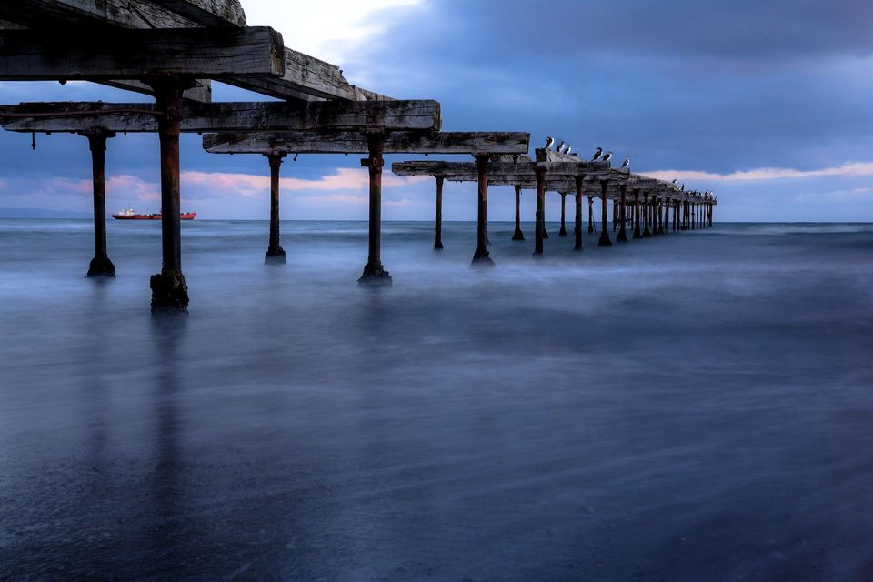
An old pier on the strait
Strait of Magellan · Punta Arenas
“Estrecho de Magallanes” by Marco Nürnberger, CC BY 2.0

A house on the square
Main square · Punta Arenas
“Palacio Sara Braun in Punta Arenas” by Paul Asman and Jill Lenoble, CC BY 2.0

The working waterfront
Tres Puentes pier · Punta Arenas
“Melinka at Embarcadero Tres Puentes” by Paul Asman and Jill Lenoble, CC BY 2.0

At the edge of the colony
Magdalena Island · Strait of Magellan
“Magellanic Penguins” by dfaulder, CC BY 2.0

Two penguins on Magdalena
Magdalena Island · Strait of Magellan
“Magellanic penguin Spheniscus magellanicus on Isla Magdalena” by Paul Asman and Jill Lenoble, CC BY 2.0

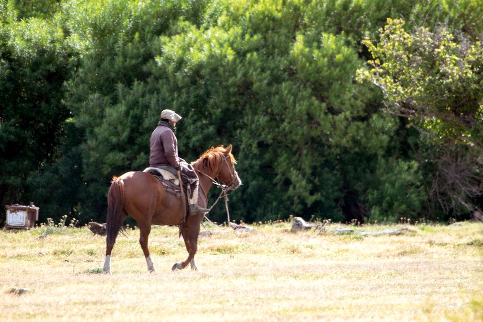
On horseback
Ranch country · Chilean Patagonia

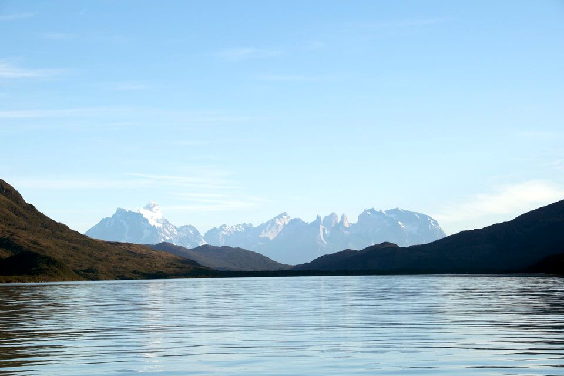
Last Hope Sound
Last Hope Sound · Puerto Natales
“Seno Ultima Esperanza” by Paul Asman and Jill Lenoble, CC BY 2.0

The town across the water
Puerto Bories · Last Hope Sound
“Puerto Natales from Singular Patagonia” by Paul Asman and Jill Lenoble, CC BY 2.0

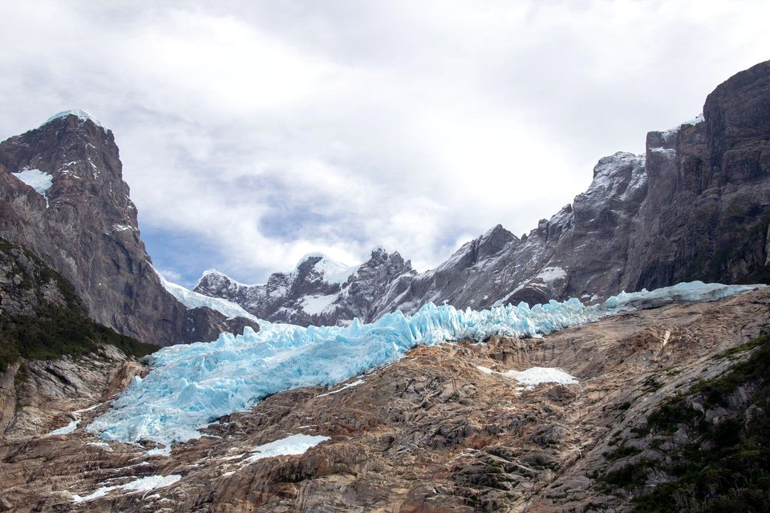
Balmaceda from the water
Monte Balmaceda · Bernardo O’Higgins National Park
“Balmaceda glacier” by Paul Asman and Jill Lenoble, CC BY 2.0

Folds in the ice
Serrano Glacier · Bernardo O’Higgins National Park
“Serrano glacier” by Paul Asman and Jill Lenoble, CC BY 2.0

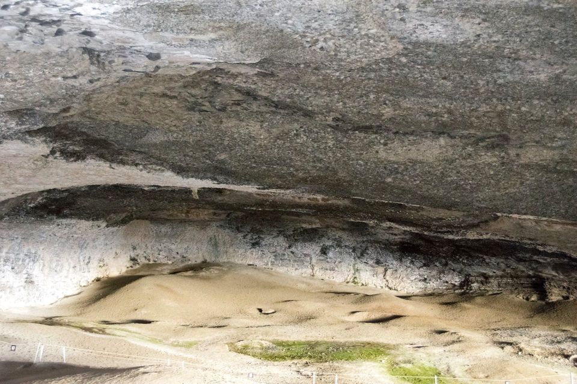
Under the rock at Milodón
Milodon Cave · near Puerto Natales
“Cueva Grande” by Paul Asman and Jill Lenoble, CC BY 2.0

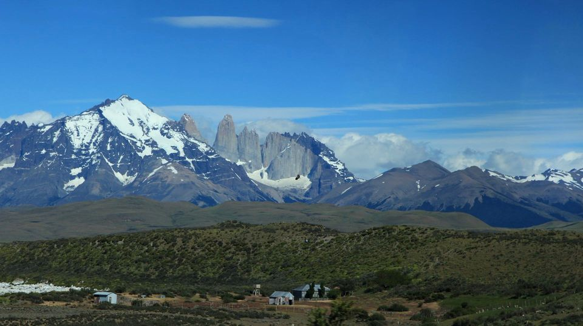
The eastern steppe
The steppe · east of Torres del Paine
“Condor flying by Torres del Paine” by Liam Quinn, CC BY-SA 2.0

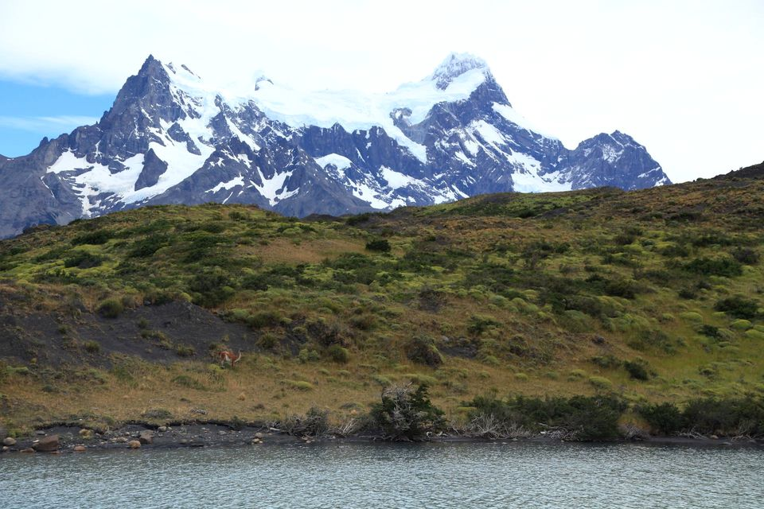
Guanaco country
Lake Pehoé · Torres del Paine
“Pehoe Lake view of a guanaco and mountains” by Liam Quinn, CC BY-SA 2.0

First light on the towers
Torres del Paine National Park
“Torres del Paine sunrise” by Pedro Szekely, CC BY-SA 2.0

Beneath the towers
Base de las Torres · Torres del Paine
“Base las Torres” by Marco Nürnberger, CC BY 2.0

Evening on Lake Nordenskjöld
Lake Nordenskjöld · Torres del Paine
“Lago Nordenskjöld” by Marco Nürnberger, CC BY 2.0

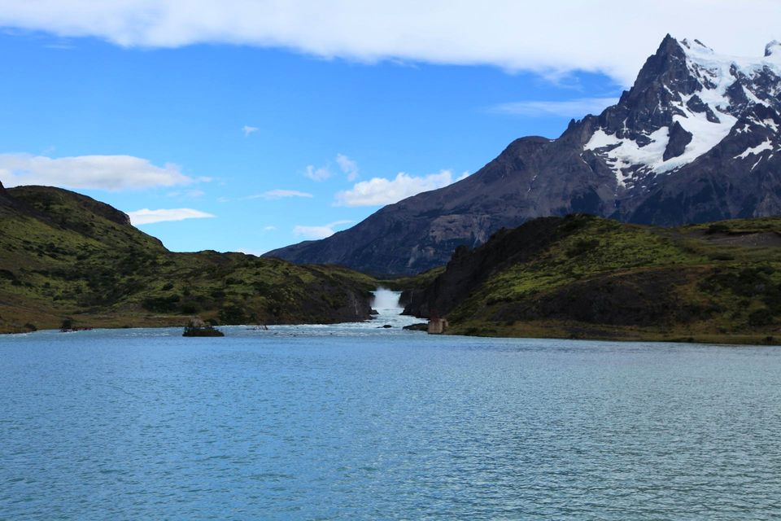
Water at Salto Grande
Salto Grande · Torres del Paine
“Salto Grande waterfall from Pehoe Lake” by Liam Quinn, CC BY-SA 2.0

The horns above Lake Pehoé
Lake Pehoé · Cuernos del Paine
“Pehoe Lake and the Cuernos del Paine” by Liam Quinn, CC BY-SA 2.0

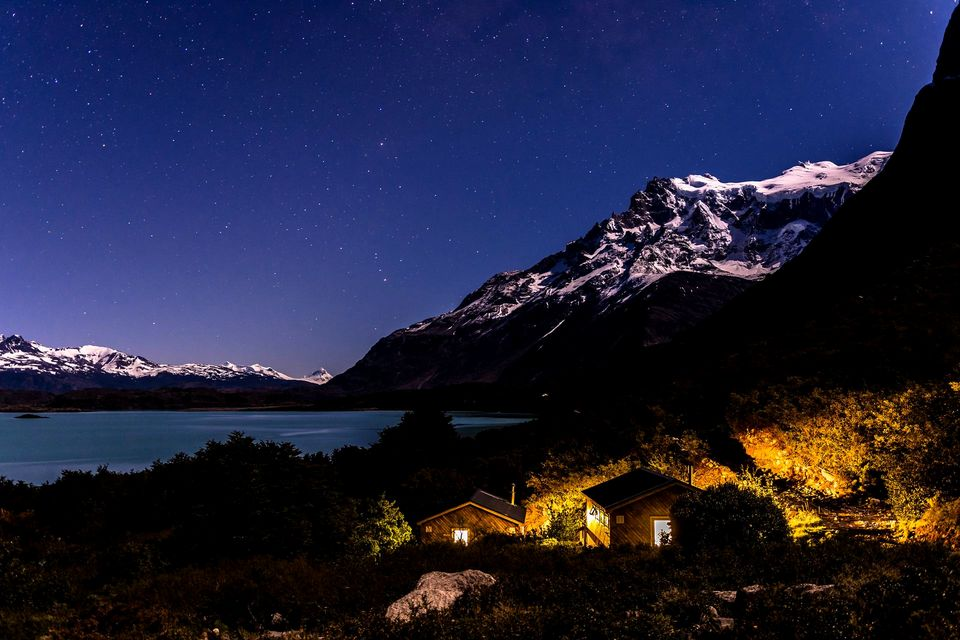
The Cuernos after dark
Los Cuernos · Torres del Paine
“Los Cuernos” by Marco Nürnberger, CC BY 2.0

Notro in bloom
Notro in bloom · Lago Porteño
“flower next to Lago Porteño Chilean firebush Embothrium coccineum” by Paul Asman and Jill Lenoble, CC BY 2.0

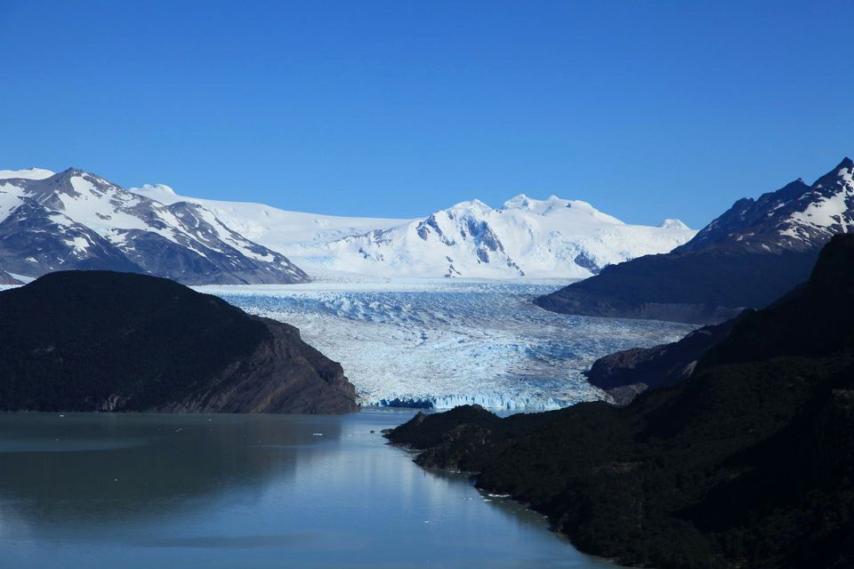
The face of Grey Glacier
Grey Glacier · Torres del Paine
“Grey Glacier” by Liam Quinn, CC BY-SA 2.0

Ice on Lake Grey
Lake Grey · Torres del Paine
“Iceberg in Lake Grey” by Liam Quinn, CC BY-SA 2.0

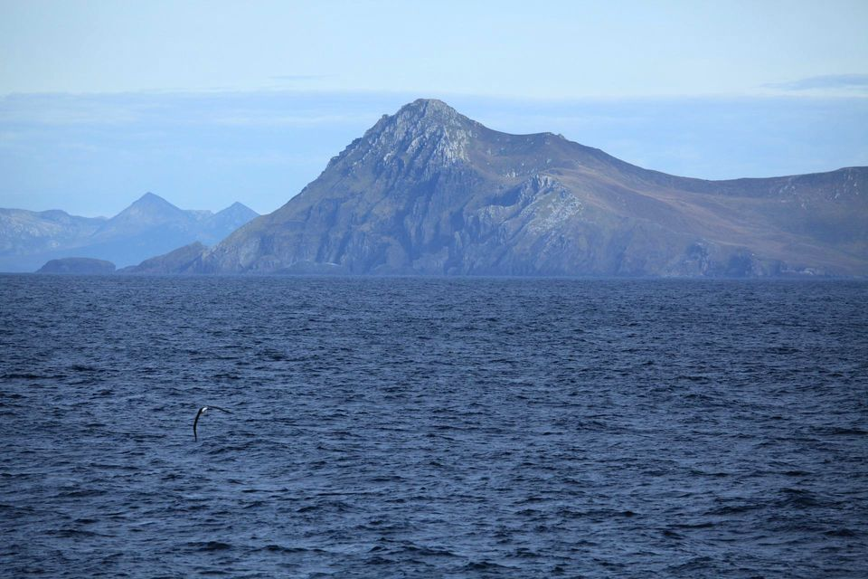
Out towards Cape Horn
Cape Horn · 55°58′S
“Cape Horn, Chile” by Liam Quinn, CC BY-SA 2.0